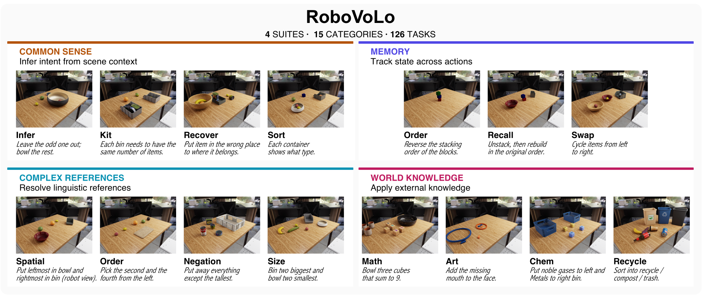
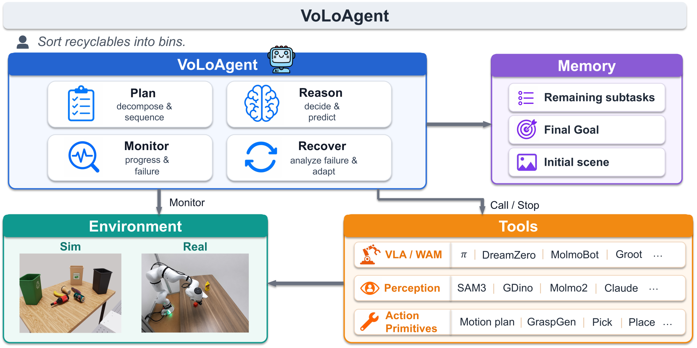
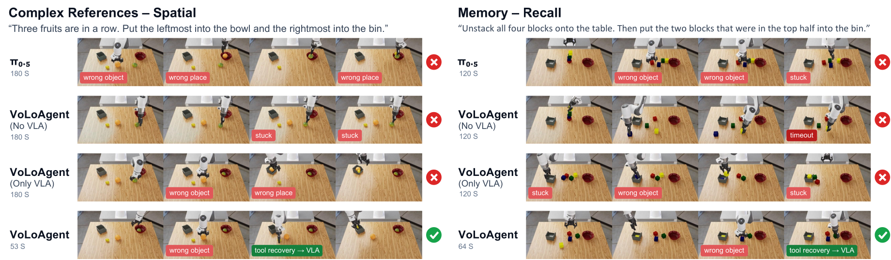
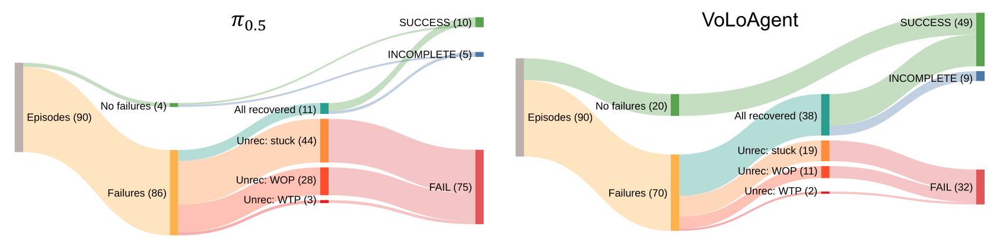
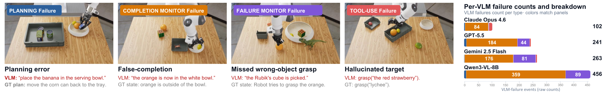
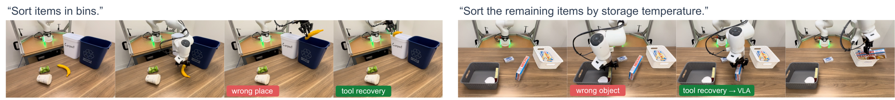

TL;DR: We frame open-vocabulary long-horizon manipulation as physical orchestration and present VoLoAgent, a VLM agent that plans, monitors, and recovers by steering a VLA/WAM as an interruptible tool alongside perception models and grasp/place primitives. We also introduce RoboVoLo, a high-fidelity benchmark of 126 tasks across common sense, memory, complex references, and world knowledge, with task-level success and failure-mode diagnostics.
Open-vocabulary long-horizon manipulation requires robots to reason over flexible instructions and complex multi-object scenes while adaptively planning, executing, monitoring, and recovering from failures. We address these demands with a closed agent loop in which a VLM orchestrates heterogeneous robot capabilities as interruptible tools. Unlike in virtual AI agents, the timing of decisions, actions and tool calls is important in a physical world that does not pause for reasoning. We refer to this setting as Physical Orchestration, and propose VoLoAgent, a VLM that plans, monitors, and recovers by treating a VLA/WAM as an interruptible tool it steers mid-rollout alongside vision models and action primitives. To evaluate these long-horizon capabilities, we introduce RoboVoLo, a high-fidelity benchmark for open-vocabulary long-horizon manipulation across common sense, memory/state tracking, complex references, and world knowledge, with both task-level success and failure-mode diagnostics. Experiments show VoLoAgent substantially outperforms single VLA/VLM or tool-based systems, with validation on real-robot experiments.

RoboVoLo benchmark. 126 long-horizon manipulation tasks across 15 categories, grouped into four capability suites: Common Sense (infer intent from scene context), Memory (track state across actions), Complex References (resolve spatial, ordinal, size, and negation cues), and World Knowledge (apply external knowledge spanning math, art, chemistry, and recycling). Built on RoboLab and NVIDIA Isaac Lab, expanded with 501 new objects.
Virtual AI agents assume a world that holds still while the agent thinks, whereas a physical agent must reason while the world keeps moving. This imposes a core monitor–halt–redirect requirement: the agent must monitor for divergence between what it believes it accomplished and the actual scene, halt an in-flight action as quickly as possible when divergence is detected, and redirect by replanning, reissuing the action, or switching tools.

VoLoAgent system. A single VLM agent plans, monitors, and orchestrates tools (VLA/WAM rollouts, perception models, grasp/place primitives) through one closed-loop control law. The agent can interrupt a VLA rollout and switch to a different tool when execution drifts.
Unlike prior hierarchical systems that split control between a VLM planner and a VLA executor, here the VLA is one callable tool alongside perception models and grasp/place primitives. VoLoAgent realizes the monitor–halt–recover loop through three design choices:
A key emergent property is complementarity: action primitives inject perception grounding into the VLA, so even a failed grasp leaves the gripper near the target with a clean view for the VLA to finish the pick.
| Suite | Category | Single action model | Code-as-policy | TiPToP (TAMP) |
VoLoAgent (Ours) | |||||||
|---|---|---|---|---|---|---|---|---|---|---|---|---|
| π0.5 | π0-FAST | MolmoBot | MolmoAct2 | DreamZero | CaP-X-s | CaP-X-e | No VLA | Only VLA | Full | |||
| Common Sense |
Infer | 0.00 | 9.52 | 14.29 | 0.00 | 19.05 | 9.52 | 14.29 | 4.76 | 19.05 | 52.38 | 52.38 |
| Kit | 16.67 | 4.17 | 0.00 | 0.00 | 12.50 | 12.50 | 16.67 | 8.33 | 41.67 | 33.33 | 50.00 | |
| Recover | 4.17 | 0.00 | 12.50 | 12.50 | 20.83 | 37.50 | 29.17 | 0.00 | 62.50 | 45.83 | 62.50 | |
| Sort | 23.81 | 0.00 | 0.00 | 0.00 | 0.00 | 0.00 | 0.00 | 0.00 | 0.00 | 47.62 | 52.38 | |
| Overall | 11.11 | 3.33 | 6.67 | 3.33 | 13.33 | 15.56 | 15.56 | 3.33 | 32.22 | 44.44 | 54.44 | |
| Memory | Order | 12.50 | 25.00 | 33.33 | 25.00 | 29.17 | 16.67 | 16.67 | 0.00 | 25.00 | 29.17 | 54.17 |
| Recall | 23.33 | 3.33 | 30.00 | 3.33 | 21.43 | 23.33 | 23.33 | 3.33 | 6.67 | 63.33 | 56.67 | |
| Swap | 3.33 | 0.00 | 6.67 | 3.33 | 0.00 | 6.67 | 6.67 | 0.00 | 10.00 | 10.00 | 3.33 | |
| Overall | 13.10 | 8.33 | 22.62 | 9.52 | 15.85 | 15.48 | 15.48 | 1.19 | 13.10 | 34.52 | 36.90 | |
| Complex References |
Spatial | 14.81 | 11.11 | 0.00 | 7.41 | 11.11 | 7.41 | 7.41 | 25.93 | 7.41 | 29.63 | 40.74 |
| Counting | 16.67 | 12.50 | 12.50 | 0.00 | 0.00 | 4.17 | 4.17 | 12.50 | 4.17 | 45.83 | 54.17 | |
| Negation | 16.67 | 0.00 | 0.00 | 0.00 | 0.00 | 0.00 | 0.00 | 20.83 | 25.00 | 45.83 | 54.17 | |
| Size+Sort | 19.05 | 4.76 | 9.52 | 0.00 | 4.76 | 19.05 | 19.05 | 23.81 | 0.00 | 42.86 | 57.14 | |
| Overall | 16.67 | 7.29 | 5.21 | 2.08 | 4.17 | 7.29 | 7.29 | 20.83 | 9.38 | 40.62 | 51.04 | |
| World Knowledge |
Art | 0.00 | 0.00 | 0.00 | 0.00 | 0.00 | 0.00 | 0.00 | 16.67 | 16.67 | 4.17 | 8.33 |
| Chem | 8.33 | 0.00 | 12.50 | 4.17 | 12.50 | 4.17 | 4.17 | 50.00 | 29.17 | 41.67 | 54.17 | |
| Math | 4.17 | 0.00 | 0.00 | 0.00 | 0.00 | 0.00 | 0.00 | 4.17 | 20.83 | 0.00 | 12.50 | |
| Recycle | 25.00 | 0.00 | 4.17 | 0.00 | 0.00 | 4.17 | 4.17 | 20.83 | 0.00 | 37.50 | 25.00 | |
| Overall | 9.38 | 0.00 | 4.17 | 1.04 | 3.12 | 2.08 | 2.08 | 22.92 | 16.67 | 20.83 | 25.00 | |
| Robolab- Vague |
Easy | 19.79 | 10.94 | 13.76 | 6.25 | 19.79 | 16.67 | 15.10 | 29.69 | 19.79 | 35.94 | 34.90 |
| Med | 17.54 | 11.40 | 11.40 | 6.14 | 18.80 | 14.04 | 9.65 | 7.02 | 16.67 | 26.32 | 30.70 | |
| Hard | 5.56 | 3.70 | 3.77 | 0.00 | 13.73 | 7.41 | 1.85 | 5.56 | 12.96 | 16.67 | 24.07 | |
| Overall | 16.94 | 10.00 | 11.52 | 5.28 | 18.61 | 14.44 | 11.39 | 18.89 | 17.78 | 30.00 | 31.94 | |
Results of various methods on RoboVoLo and the Robolab-Vague benchmark. All values are success rate (%, higher is better). Each task is run for 3 episodes. Bold = best in row; underline = second-best. VoLoAgent (Full) achieves the best long-horizon open-vocabulary manipulation performance, outperforming single-model, code-as-policy, and TAMP baselines on every suite.

Process comparison on two open-vocabulary long-horizon tasks, one row per system. Red tags mark failure events; green tags mark grasp-tool recovery events. When the VLA selects the wrong object, the grasp tool repositions the gripper on the correct target, and the VLA completes the contact-rich manipulation.

World failure analysis tracing episodes through failures, recovery, and outcomes for π0.5 (left) and VoLoAgent (right). VoLoAgent has 5× more failure-free episodes (20 vs. 4) and recovers from 54% (38/70) of failures vs. only 13% (11/86) for π0.5. Major failure subtypes: stuck, WOP = wrong object picked, WTP = wrong target place.

VLM failure audit. Left: one example per failure type (Planning, Completion-monitor, Failure-monitor, Tool-use). Right: per-VLM error counts across n=90 episodes. Completion-monitor errors dominate every backend; Claude Opus 4.6 reaches only 5% of the ceiling error count vs. 23% for Qwen3-VL-8B.

Real robot examples. Deployed on a real Franka FR3, VoLoAgent achieves 42.9% success vs. 14.3% for π0.5 across 14 RoboVoLo tasks (3 trials each), a 3× improvement. The agent monitors and recovers from failures such as wrong-place destination and wrong-object pick in the real world as well.
@article{chen2026volo,
title = {VoLo: A Physical Orchestrator for Open-Vocabulary Long-Horizon Manipulation},
author = {Chen, Siyi and Hadfield, Hugo and Zook, Alex and Uy, Mikaela Angelina and
Song, Chan Hee and Coumans, Erwin and Yang, Xuning and Ladhak, Faisal and
Qu, Qing and Birchfield, Stan and Tremblay, Jonathan and Blukis, Valts},
journal = {arXiv preprint arXiv:2606.07723},
year = {2026},
eprint = {2606.07723},
archivePrefix = {arXiv},
primaryClass = {cs.RO},
url = {https://arxiv.org/abs/2606.07723}
}